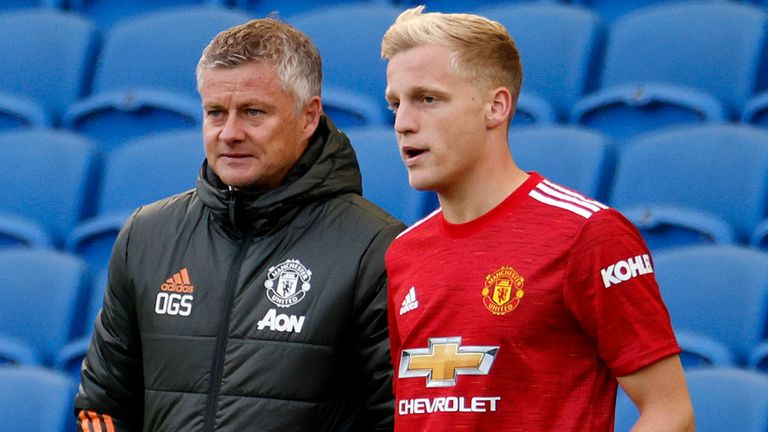
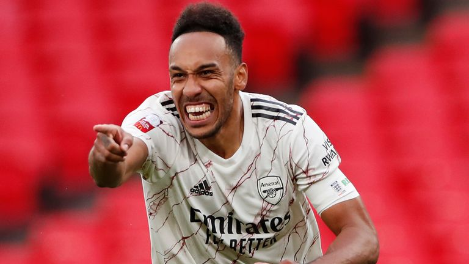
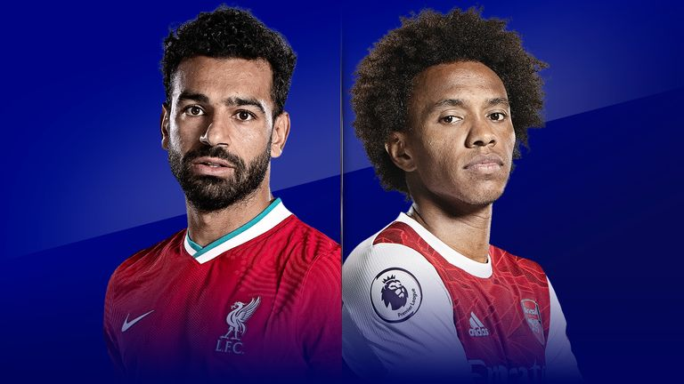
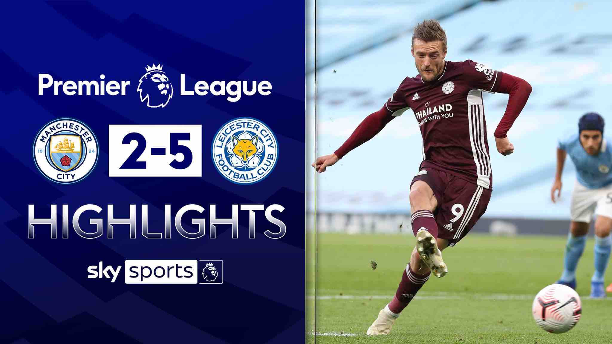
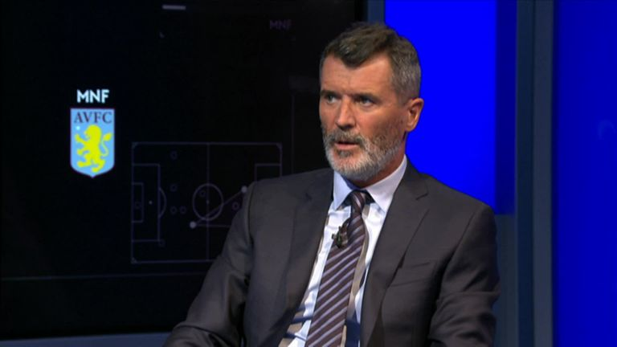

Todays News
How Trump's base appeals have backfired
(CNN)President Donald Trump's refusal on Wednesday to guarantee a peaceful transfer of power if he loses to Joe Biden in November is leading America towards a dark place during a year of incendiary political tensions.
(CNN)Poll of the week: A new Quinnipiac University national poll finds Democratic presidential nominee Joe Biden with a 52% to 42% lead over President Donald Trump among likely voters.
That's somewhat of a more optimistic result for Biden than the average of national polls, which has Biden's margin closer to 7 points.
What's the point: Trump's 2020 campaign and, indeed, his entire presidency has been about rallying the Republican base.
How Trump's base appeals have backfired

Manchester United have lost the ability to do the "dark arts of transfers" and supporters have received "mixed messages" about the club's financial position, according to football writer Andy Mitten.
United bought Donny van de Beek from Ajax in a deal worth up to £39m, but the midfielder remains their only summer arrival despite efforts to sign £108m-rated Borussia Dortmund winger Jadon Sancho and Porto left-back Alex Telles.
Mitten - the editor of fanzine United We Stand - says supporters do not believe in the club's strategy and referred to a recent conversation he had with a former United player.
Auba: Champions League the target for Arsenal

Arsenal captain opens up to Sky Sports on staying at the Emirates, his first impressions of Mikel Arteta, and the Gunners' ambitions for the new season. Watch Liverpool vs Arsenal on Sky Sports Premier League from 7.45pm on Monday Night Football; Kick-off 8pm
Titles, Champions League football and 'legend' status. Pierre-Emerick Aubameyang is setting his targets high at Arsenal after signing a new three-year deal with the club.
Fresh from his contract renewal and ahead of Arsenal's trip to Liverpool on Monday Night Football, Aubameyang has told Sky Sports:
Arsenal should be aiming to be among the title challengers this season. That they can travel to Anfield, the home of champions Liverpool, "without fear" on Monday evening.
Liverpool vs Arsenal: Will the Gunners pull off another shock?

For the second year in a row, Liverpool and Arsenal are preparing to meet at Anfield in the third week of the Premier League season.
In August of last year, the encounter ended in a 3-1 win for Jurgen Klopp's side but the final scoreline could easily have been worse for Arsenal.
Liverpool attempted 25 shots over the course of the 90 minutes. The two clubs appeared on different trajectories and so it proved.
This year, however, with Mikel Arteta at the helm in place of Unai Emery, Arsenal head into the game believing that downward trajectory has been reversed.
The most recent meeting between the two sides, in the Community Shield last month, ended in a penalty shootout win for the Gunners. There was also the 2-1 win at the Emirates Stadium in July.
Man City 2-5 Leicester: Jamie Vardy scores hat-trick

Jamie Vardy scored a hat-trick as Leicester ran riot in a stunning 5-2 victory over Manchester City at the Etihad Stadium.
Man City dominated early on and took the lead through Riyad Mahrez's superb half volley with his weaker right foot from 15 yards (4), but Leicester equalised with their first shot on goal as Kyle Walker tripped Vardy in the box; the England striker duly converted the penalty (37).
With Leicester's second shot, Vardy produced a stunning flick beyond Ederson from close range (54), before again winning a penalty, this time from Eric Garcia's foul, and converting for 3-1 (58)
Sub Maddison made it four with a screamer from 25 yards, curled into the top corner (77), before Nathan Ake's header looked to have made the scoreline look slightly more respectable (84).
Man United: Roy Keane worries for future of Ole Gunnar Solskjaer

Roy Keane tells Sky Sports: "Ole will probably have to get his hands on a trophy. I think the honeymoon period is certainly over, and the pressure starts to mount now"; Man United lost opening match of new Premier League season to Crystal Palace
Roy Keane believes Ole Gunnar Solskjaer needs to guide Man United to a top-four finish or win a trophy this season if he is to keep his job as manager.
United finished a distant third in the Premier League last season, 33 points off champions Manchester City, and Keane reckons Solskjaer cannot afford for that chasm to repeat itself this time around.
"The remit will be different for Ole this year," Keane told Monday Night Football. "I think last year, it was about getting into the top four - I know they got to three semi-finals - but it will be higher this year.